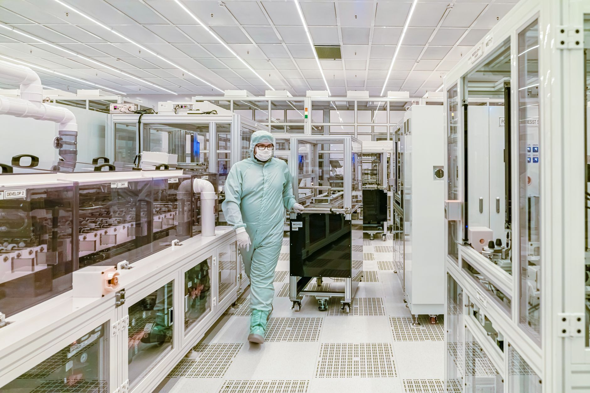

일본, GlobalFoundries에 210억 달러 지원 제안…미국 팹 증설 협상

EE타임스는 2026년 10월 15일, 일본 정부가 미국 반도체 파운드리 GlobalFoundries(GF)에 약 210억 달러 규모의 지원을 제안하며 미국 내 신규 팹 2곳 건설 협상을 진행 중이라고 보도했다. 대상 부지는 뉴욕주로 알려졌다.
EE타임스에 따르면 이번 지원 제안이 실현될 경우 미국의 반도체 생산 능력이 최대 10% 늘어날 것으로 분석됐다. 다만 일부 애널리스트들은 대규모 국가 지원이 시장 경쟁을 왜곡할 수 있다는 우려도 제기하고 있다.
이번 협상은 미국 CHIPS법(2022년) 이후 가속화된 반도체 공급망 재내재화(reshoring) 흐름의 연장선상에 있다. 미국은 첨단 로직 칩뿐 아니라 성숙 공정(28nm 이상) 반도체의 국내 조달 비율을 높이려는 정책을 추진하고 있으며, GF는 이 성숙 공정 분야의 핵심 플레이어다.
GlobalFoundries는 현재 뉴욕 몰타(Malta)와 버몬트 에식스 정션(Essex Junction)에 미국 내 주요 생산 거점을 보유하고 있다. 차량용·산업용·항공우주용 반도체를 주력으로 하며, FD-SOI 공정에서 독보적인 위치를 갖고 있다.
일본이 미국 기업의 미국 팹 확장에 자금을 지원하는 구도는 이례적이다. 일본으로서는 반도체 공급망에서 미국과의 전략적 연대를 강화하고, 자국 소재·부품 기업의 수출 기회를 확대하는 효과를 기대하는 것으로 분석된다. 일본 반도체 장비·소재 기업들이 GF 신규 팹의 주요 공급사로 자리잡을 가능성이 있다.
소재 공급망 측면에서 GF 팹 증설은 웨이퍼·포토레지스트·특수 가스·CMP 슬러리 등 전공정 소재 수요 증가로 이어진다. 한국의 주요 반도체 소재 기업들도 GF의 기존 검증 공급사 지위를 활용해 신규 팹 물량 확보 경쟁에 뛰어들 것으로 예상된다.
GF는 앞서 미국 정부로부터 CHIPS법 보조금 15억 달러를 받기로 확정한 바 있으며, 여기에 일본 측 지원이 추가되면 총 투자 규모가 대폭 확대된다. 이는 인텔·TSMC의 미국 투자와 함께 미국 반도체 생산 지형을 크게 바꿀 변수가 될 전망이다.
한편 GlobalFoundries는 올해 세미콘 웨스트 2026에서 FD-SOI 공정을 물리적 AI(엣지 AI·차량용 AI) 시장 공략의 핵심으로 제시한 바 있다. FD-SOI는 전력 효율이 우수해 배터리 의존도가 높은 모바일·IoT·차량용 반도체에 적합한 플랫폼으로 평가된다.
국내 파운드리 생태계 입장에서는 GF 증설로 인한 성숙 공정 공급 확대가 중장기적으로 가격 경쟁 압력으로 작용할 수 있다. 반면 GF 팹에 소재를 공급하는 한국 기업들에게는 물량 확대 기회가 열린다는 양면성이 있다.
미국·일본·유럽의 반도체 공급망 협력이 강화되는 가운데 한국은 소재·부품·장비 분야에서 이들 공급망 내 포지션을 확보하는 전략이 중요해지고 있다. 산업부가 최근 반도체 전담 국장급 조직을 출범시킨 것도 이러한 지정학적 변화에 대응하기 위한 움직임으로 해석된다.
향후 협상 결과에 따라 착공 시점과 생산 품목이 구체화될 예정이다. 업계는 최종 협약 체결이 2026년 말~2027년 초에 이뤄질 경우 실제 양산은 2029~2030년께 가능할 것으로 내다보고 있다.